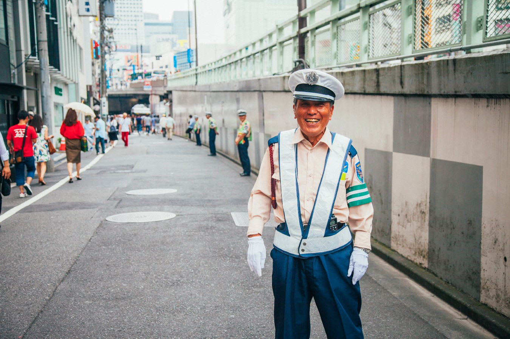
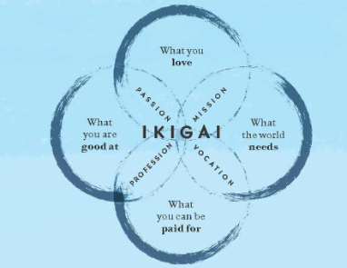
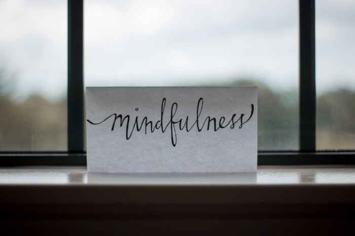

IKIGAI - The Japanese Secret to a Long Happy Life
I recently completed reading a very inspiring book — IKIGAI — The Japanese Secret to a Long Happy Life. The book is authored by Hector Garcia and Francesc Miralles. In this article, I am going to talk about my learning from the book.
The book touches the various aspects of life which can help us achieve a long happy life. It is based on ancient, well practised Japanese technique called — IKIGAI.
If you google the word, you will get various meanings like
A reason for being, encompassing joy, a sense of purpose and
meaning and a feeling of well-being
or
The word derives from iki, meaning life and kai, meaning the
realisation of hopes and expectations.
But the one I liked the most is —
A reason to jump out of bed each morning!
This book draws a lot of references from an island in Japan called — Okinawa where there 24.5 inhabitants of age more 100 for every 1,00,000 people.
Blue Zones
Once you understand the meaning of the word Ikigai, the book tries to explain the deep art of staying young while growing old. It gives the references of 5 Blue Zones in the world where residents of these places live longer than average and secrets of their long life.
Five blue zones are as follows:

The Italian island of Sardinia.
Okinawa, Japan.

Loma Linda, California.

Costa Rica's isolated Nicoya Peninsula.

Ikaria, an isolated Greek island.
Little Stress is good for you
In next chapter, book explains how stress, a lot sitting adds up to your age and makes reduces your life duration. Interesting it also mentions very prominently that little stress is good for you since it keeps you going. I firmly believe — Being Conscious of Your Daily Routine Can Lead to A Better Life!
Discover the meaning of your life
In the subsequent chapter, it helps you deep dive into discovering the meaning of your life. It is quite evident that the authors stress more on discovering the meaning of life rather than creating one for you!
Finding flow in everything that you do
This part is my most favourite where the authors helps you find the meaning of being in the flow. If you have discovered the meaning of your life, you need to completely immerse into the experience without being distracted by the surroundings and you attain the flow.
The book also talks about some very interesting techniques to practice which can help you achieve the flow.
Practising the techniques
The last section talks about collection of various different techniques which help you keep your mind and body intact. It talks about —
- Meditation
- Yoga
- Surya Namaskara
- Radio Taiso
- Tai Chi
- etc.
Wabi Sabi
The book concludes after introducing to another Japanese Technique called — Wabi-Sabi. This techniques talks about finding beauty in imperfect, incomplete things. Here flawed is preferred over perfection. Japanese believe that only imperfect, incomplete and ephemeral things are beautiful because they resemble the nature.
Conclusion
To conclude, I think the book is extremely inspiring and full of content. I could attain my flow while reading it. Loved it ! Highly recommended reading — You can buy the book on Amazon!